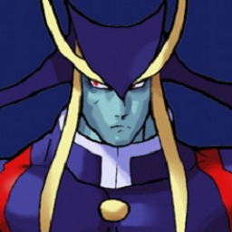

 Darkstalkers: Resurrection
Details
 |
|
| Playtime | Not Played |
| Last Activity | Never |
| Added | 5/1/2025 7:37:31 |
| Modified | 5/7/2025 4:31:34 |
| Completion Status | Not Played |
| Library | Playnite |
| Source | |
| Platform | Sony PlayStation 3 |
| Release Date | 3/12/2013 |
| Community Score | |
| Critic Score | 82 |
| User Score | |
| Genre | Fighting |
| Developer | Iron Galaxy Studios |
| Publisher | Capcom |
| Feature | Multiplayer Single Player |
| Links | Wikipedia Official website |
| Tag | [People] artist: Stanley "Artgerm" Lau [People] producer: Derek Neal |
Description
Darkstalkers Resurrection is a 2013 fighting video game developed by Iron Galaxy Studios and published by Capcom. It is a compilation of two classic Capcom's 2D fighting games: Night Warriors: Darkstalkers' Revenge (1995) and Darkstalkers 3 (1997), which are the second and third of the Darkstalkers series. The game features HD visuals, online multiplayer, replay sharing, spectator mode, and in-game unlockables. It was released on the PlayStation Network and Xbox Live Arcade as a downloadable title, and received a positive critical reception, though the publisher claimed it has failed commercially.
Gameplay
Darkstalkers Resurrection features online play and other new enhancements in the same respect to Iron Galaxy Studios' previous Capcom arcade re-releases Street Fighter III: Third Strike Online Edition and Marvel vs. Capcom Origins. The game utilizes the GGPO netcode to provide smooth online gameplay. Matchmaking follows in the footsteps of Iron Galaxy Studios' earlier products and introduces additional options such as region matching and ping display. Aside from the standard ranked and player matches, Resurrection also includes an online tournament mode. The game adds HD filtering with multiple viewing options, YouTube replay uploads, eight-player lobbies and a tutorial mode which provides in-depth tips to the mechanics of the game. Players who complete in-game challenges receive points which can be redeemed to unlock bonus content via the "Vault" system, including custom artwork by Stanley "Artgerm" Lau, concept art, videos, and other rewards.
Development
Darkstalkers Resurrection was announced by Capcom executive producer, Yoshinori Ono, during the Street Fighter 25th Anniversary panel at New York Comic Con on October 11, 2012. According to Capcom USA senior vice president Christian Svensson, Resurrection had been in development for about a year before its announcement. When the time to decide whether Night Warriors: Darkstalkers' Revenge or Darkstalkers 3 would receive the HD treatment arrived during planning cycles, Resurrection producer Derek Neal revealed that his team was "agonizing over which to release". Due to the divide in the community's preference between the two titles, Capcom opted to release both instead as a dual pack. Neal stated that games would be left unchanged in terms of balance and priority with the intention of remaining faithful to the original arcade versions. In December–January 2013, Capcom ran the "Embrace the Dark" character creation competition.
Release
Darkstalkers Resurrection was scheduled to be released between March 12–14 in North America, Europe and Japan. On March 14, the day of the game's regional release, two tie-in books are published in Japan: the manga collection Vampire Resurrection Official Anthology Comic (ヴァンパイア リザレクション オフィシャルアンソロジーコミック, Banpaia Rizarekushon Ofisharu Ansorojī Komikku) and the art book Vampire Artworks (ヴァンパイア アートワークス, Banpaia Ātowākusu), featuring works of Capcom's Japanese artists.
Reception
Darkstalkers Resurrection received universally positive reviews, resulting in the averaged ratings of more than 80% at both GameRankings and Metacritic for both platforms. Svensson said that while the game had appeared in digital bestseller top ten lists, it has not managed to sell enough copies to be considered commercially successful.